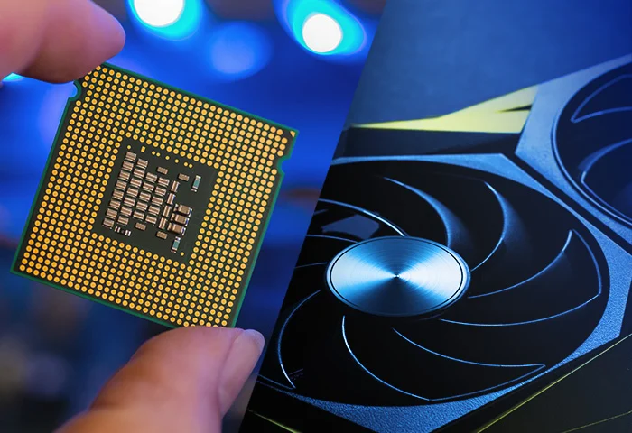
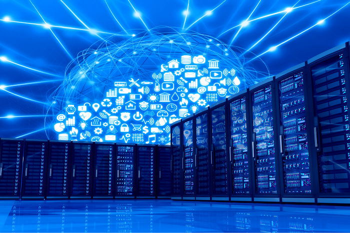
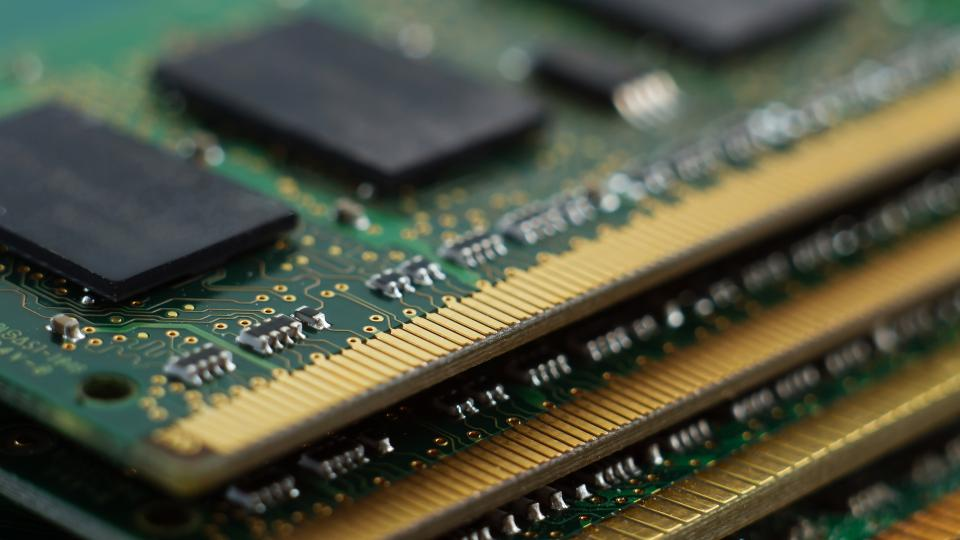
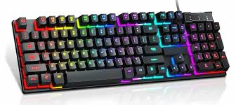
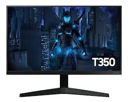
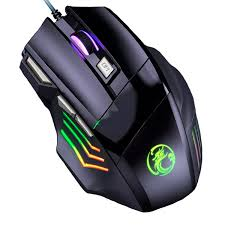
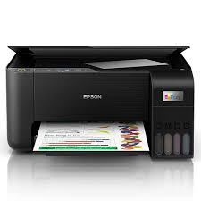
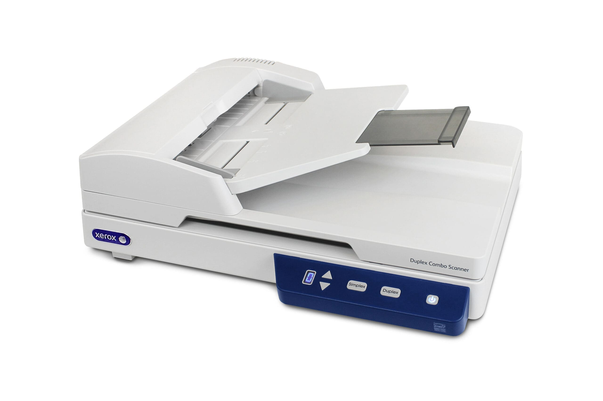
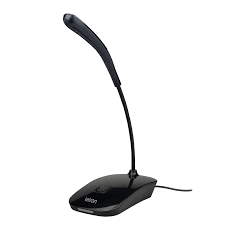

Componentes internos,
 Uma fonte de alimentação é um dispositivo elétrico que recebe energia de uma fonte (como a rede elétrica ou uma bateria) e a converte para a tensão, corrente e frequência corretas, necessárias para alimentar uma carga específica, como um computador, motor ou outro aparelho eletrônico. O seu objetivo é fornecer uma energia estável e controlada para o dispositivo a ser alimentado, garantindo o seu funcionamento adequado.
Uma fonte de alimentação é um dispositivo elétrico que recebe energia de uma fonte (como a rede elétrica ou uma bateria) e a converte para a tensão, corrente e frequência corretas, necessárias para alimentar uma carga específica, como um computador, motor ou outro aparelho eletrônico. O seu objetivo é fornecer uma energia estável e controlada para o dispositivo a ser alimentado, garantindo o seu funcionamento adequado.
CPU
 Uma CPU (Unidade Central de Processamento) é o componente central de um computador que atua como o "cérebro" do sistema, responsável por executar as instruções, processar dados e coordenar as tarefas gerais. Composta por circuitos como a Unidade de Controlo e a Unidade Lógica e Aritmética (ULA), a CPU busca dados da memória, os processa e devolve os resultados, tornando-se essencial para o funcionamento de qualquer sistema computacional moderno.Armazenamento
 Armazenamento" refere-se à ação de guardar algo para uso futuro ou ao local onde se guarda, podendo ser físico (como um cartão SD) ou digital, como na nuvem. No contexto digital, o armazenamento Google, que inclui os serviços Gmail, Google Drive e Google Fotos, tem um limite padrão de 15 GB, que pode ser expandido mediante pagamento. É possível verificar o espaço disponível e liberar espaço excluindo arquivos desnecessários, como fotos, vídeos e documentos grandes, a partir de dispositivos móveis ou do computador.Memória
 A memória do computador armazena informações, como dados e programas para uso imediato no computador. O termo memória muitas vezes é sinônimo de armazenamento primário ou memória principal. Um sinônimo arcaico para memória é armazenamento.Fonte de alimentação
Uma fonte de alimentação é um dispositivo elétrico que recebe energia de uma fonte (como a rede elétrica ou uma bateria) e a converte para a tensão, corrente e frequência corretas, necessárias para alimentar uma carga específica, como um computador, motor ou outro aparelho eletrônico. O seu objetivo é fornecer uma energia estável e controlada para o dispositivo a ser alimentado, garantindo o seu funcionamento adequado.
Componentes externos
 Gabinete" tem vários significados, como um móvel de escritório ou estudo, a caixa que contém os componentes de um computador, ou um ambiente de trabalho para autoridades políticas. Na prática, refere-se a um espaço, seja físico ou uma peça de mobiliário, com o objetivo de organizar, proteger ou servir de local de trabalho, dependendo do contexto em que é usado.
Gabinete" tem vários significados, como um móvel de escritório ou estudo, a caixa que contém os componentes de um computador, ou um ambiente de trabalho para autoridades políticas. Na prática, refere-se a um espaço, seja físico ou uma peça de mobiliário, com o objetivo de organizar, proteger ou servir de local de trabalho, dependendo do contexto em que é usado.
 Uma webcam é uma câmera digital que captura vídeo e áudio para serem transmitidos em tempo real pela internet, sendo utilizada para videoconferências, transmissões ao vivo, gravações e comunicação online. Ela pode ser integrada em computadores e notebooks, ou ser um dispositivo externo conectado via USB ou sem fio.
Uma webcam é uma câmera digital que captura vídeo e áudio para serem transmitidos em tempo real pela internet, sendo utilizada para videoconferências, transmissões ao vivo, gravações e comunicação online. Ela pode ser integrada em computadores e notebooks, ou ser um dispositivo externo conectado via USB ou sem fio.
 Uma caixa de som (também chamada de caixa acústica ou, em Portugal, coluna) é um dispositivo que converte sinais elétricos em ondas sonoras audíveis. Ela abriga os alto-falantes, ímãs e outros componentes que vibram o ar para produzir música, som de filmes ou qualquer outra forma de áudio, tornando a experiência sonora mais potente e
Uma caixa de som (também chamada de caixa acústica ou, em Portugal, coluna) é um dispositivo que converte sinais elétricos em ondas sonoras audíveis. Ela abriga os alto-falantes, ímãs e outros componentes que vibram o ar para produzir música, som de filmes ou qualquer outra forma de áudio, tornando a experiência sonora mais potente e
 Headset é um conjunto de fone de ouvido com controle de volume e microfone acoplado para uso em microcomputadores multimídia e também para telemarketing, ficando preso à cabeça do usuário.
Headset é um conjunto de fone de ouvido com controle de volume e microfone acoplado para uso em microcomputadores multimídia e também para telemarketing, ficando preso à cabeça do usuário.
Teclado
 Um teclado é um dispositivo de entrada para inserir texto e comandos em um computador ou eletrónico. Existem teclados físicos e virtuais, com teclas para letras, números e símbolos. No uso comum, pode-se referir a um instrumento musical de teclas para criar melodias e harmonias.Monitor de vídeo
 Um monitor é um dispositivo de saída do computador, cuja função é transmitir informação ao utilizador através da imagem.Mouse
 O mouse faz parte dos periféricos do seu computador e é a parte que no permite interagir com os objetos que aparecem na tela através de um cursor que podemos ver no monitor. Geralmente o mouse possui dois botões: o esquerdo é usado para abrir, arrastar, selecionar e executar funções.Impressora
 Impressora ou dispositivo de impressão é um periférico que, quando conectado a um computador ou a uma rede de computadores, tem a função de dispositivo de saída, imprimindo textos, gráficos ou qualquer outro resultado de uma aplicação.Plotter
O plotter é um equipamento de impressão concebido para produzir imagens, textos e desenhos em larga escala, geralmente superiores aos tamanhos padrão oferecidos por impressoras de mesa.Scanner
 Um scanner é um dispositivo periférico de entrada que converte documentos físicos, imagens ou objetos em formato digital, permitindo a visualização, edição e armazenamento em computadores. Ele funciona através de uma fonte de luz e um sensor fotossensível que capturam o conteúdo e o transmitem como dados digitais. Existem vários tipos de scanners, como os de mesa e portáteis, e sua função principal é a digitalização de materiais para facilitar o acesso e a gestão de informações.Gabinete
Gabinete" tem vários significados, como um móvel de escritório ou estudo, a caixa que contém os componentes de um computador, ou um ambiente de trabalho para autoridades políticas. Na prática, refere-se a um espaço, seja físico ou uma peça de mobiliário, com o objetivo de organizar, proteger ou servir de local de trabalho, dependendo do contexto em que é usado.
Web Cam
Uma webcam é uma câmera digital que captura vídeo e áudio para serem transmitidos em tempo real pela internet, sendo utilizada para videoconferências, transmissões ao vivo, gravações e comunicação online. Ela pode ser integrada em computadores e notebooks, ou ser um dispositivo externo conectado via USB ou sem fio.
Caixas de som
Uma caixa de som (também chamada de caixa acústica ou, em Portugal, coluna) é um dispositivo que converte sinais elétricos em ondas sonoras audíveis. Ela abriga os alto-falantes, ímãs e outros componentes que vibram o ar para produzir música, som de filmes ou qualquer outra forma de áudio, tornando a experiência sonora mais potente e
Microfone
 Um microfone é um transdutor, um dispositivo que converte ondas sonoras em um sinal elétrico, permitindo a captura e transmissão do áudio para outros equipamentos, como gravadores, computadores e amplificadores. O funcionamento básico envolve um diafragma que vibra em resposta às ondas sonoras, e essa vibração é então convertida em um sinal elétrico de acordo com o mecanismo de cada tipo de microfone.Head Set
Headset é um conjunto de fone de ouvido com controle de volume e microfone acoplado para uso em microcomputadores multimídia e também para telemarketing, ficando preso à cabeça do usuário.
Interfaces de entrada e saída
 Uma interface de entrada e saída (E/S) é um ponto de ligação que permite a troca de dados entre um sistema (como um computador) e dispositivos externos ou periféricos. Ela atua como um canal de comunicação, convertendo sinais para processamento interno e fornecendo as informações processadas de volta ao utilizador ou a outros dispositivos. Exemplos de dispositivos de entrada incluem um teclado e um microfone, enquanto um monitor e uma impressora são exemplos de saída.
Uma interface de entrada e saída (E/S) é um ponto de ligação que permite a troca de dados entre um sistema (como um computador) e dispositivos externos ou periféricos. Ela atua como um canal de comunicação, convertendo sinais para processamento interno e fornecendo as informações processadas de volta ao utilizador ou a outros dispositivos. Exemplos de dispositivos de entrada incluem um teclado e um microfone, enquanto um monitor e uma impressora são exemplos de saída.
interface sem fio
 O que é uma interface de rede sem fio? Uma interface de rede sem fio é um componente eletrônico que permite a comunicação entre dispositivos eletrônicos sem a necessidade de fios físicos.
O que é uma interface de rede sem fio? Uma interface de rede sem fio é um componente eletrônico que permite a comunicação entre dispositivos eletrônicos sem a necessidade de fios físicos.